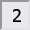

How to Play:
This is how the default minefield looks like with unrevealed tiles:

You reveal a tile with

With the Input you can customize the dimensions and difficulty of Minesweeper:
This is how the default minefield looks like with unrevealed tiles:
You need to reveal all the tiles that dont have a bomb:
You can encounter:
| A bomb |  |
Means Gameover

|

|
| Nothing |  |
Will reveal all other empty tiles around it and their adjacents. Like this → | |
| A number |  | Shows number of adjacent mines around it. Some examples to demonstrate that ↓ |
|
2 adj mines:
fully revealed:
example with 3:revealed:
|
|||
| Use the numbers to figure out where the bombs are and step around them or flag (see flags feature ↓) them. |
|
A win could look like this:

|
| Additionally a win alert will pop up and congratulate you. |
| This display counts down the bombs you have flagged: |  |
|
|
Keep in mind that this will count wrong flags. So you might end up with a negative number: |
That means you have set more flags than there are bombs. |
You can win without flags.
But they will help you remember. And you need them to in order to use the next feature:
This, a little more advanced feature, allows you to click on a number to reveal its surrounding tiles,
if the amount of adjacent flags is the same as the clicked number.
That means if you click this 2:
→
Because there are 2 →
|
Wrong flag:
→
Clicking on →
|
The last feature is for when you already lost:
To know where you went wrong,
| A red background tells you that you wrongly flagged a tile as bomb. | |
| A green background tells you a correct flag. |
I hope with this tutorial, you got a basic understanding of the game and how to play it.
If not, you can also always ask me personally.
gl hf
↑ (good luck, have fun)